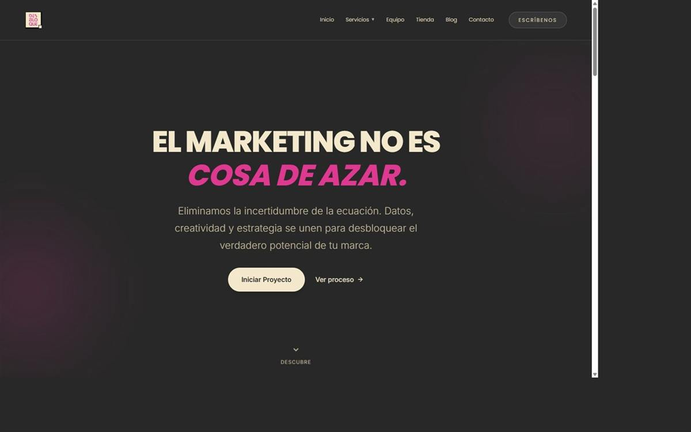

Rol
Marca · Web · Producto
Marca y experiencia digital para Desbloque. Web viva en desbloque.com con foco en producto, tono claro y una presencia digital coherente.

Construir una marca digital clara y una web que explique el producto sin ruido: tono cercano, estructura simple y una identidad que aguante crecer.